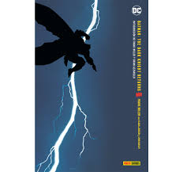
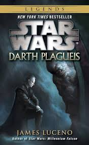
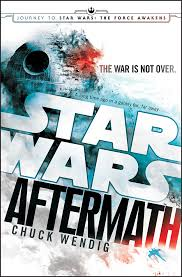

The Dark Knight Returns
"The Dark Knight Returns" es una obra maestra del cómic creada por Frank Miller. Ambientada en un futuro distópico, la historia sigue a un envejecido Bruce Wayne que regresa como Batman después de años de retiro. Enfrentándose a la corrupción y el crimen que han inundado Gotham, Batman se ve obligado a confrontar a viejos enemigos como el Joker y Two-Face. La narrativa oscura y compleja explora temas de envejecimiento, moralidad y la esencia misma del héroe."
Darth Plagueis
"Darth Plagueis" es una novela escrita por James Luceno que explora el origen y la ascensión de Darth Sidious al poder como Emperador Palpatine. La historia se centra en la figura enigmática de Darth Plagueis, un Lord Sith obsesionado con manipular la Fuerza para controlar la vida y la muerte. A través de una trama llena de intrigas políticas y oscuros secretos, la novela revela los eventos que llevaron a la caída de la República y el ascenso del Imperio Galáctico, todo desde la perspectiva del lado oscuro de la Fuerza."
Aftermath
"Aftermath" es una novela de Chuck Wendig que se desarrolla después de los eventos de "El retorno del Jedi". La historia sigue los turbulentos acontecimientos que tienen lugar en la galaxia mientras la Rebelión celebra su victoria sobre el Imperio. Sin embargo, la guerra aún no ha terminado, y los remanentes del Imperio luchan desesperadamente por mantener su poder mientras la Nueva República intenta establecerse. Con una mezcla de nuevos personajes y caras conocidas, "Aftermath" ofrece una visión intrigante del período de transición entre dos eras en la galaxia de Star Wars."